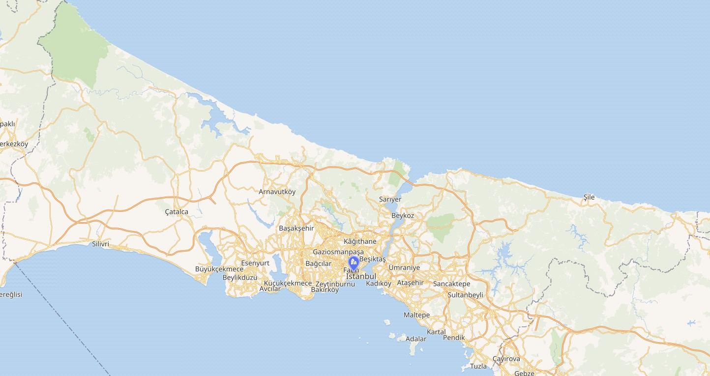

📊 Toplam Ziyaret:
14.258
Şu anda 45 ziyaretçi sayfayı görüntülüyor
27
⏳ 27 Asırlık Tarihî Geçmiş
39
📍 Bağlı İlçe Sayısı
5.343
🌍 Toplam Yüzölçümü (km²)
👥 RESMÎ NÜFUS
15.656.000
📈 İLÇE NÜFUS YOĞUNLUĞU
En Yüksek: Esenyurt, Bağcılar, K.Çekmece
En Düşük: Şile (Geniş Ormanlık Alan)
En Düşük: Şile (Geniş Ormanlık Alan)
📐 COĞRAFİ RAKIM
Ortalama: 120 m
📮 POSTA KODLARI
34000 - 34990
📞 ALAN KODLARI
0212 / 0216
🌤️ ANLIK HAVA DURUMU (API)
Yükleniyor...
🚧 Canlı Trafik Akışı, Anlık Yoğunluk & Yol Tehlikeleri
İstanbul ana ulaşım arterlerindeki gerçek zamanlı trafik yoğunluğu oranları ile sürücülerin karşısına çıkabilecek kritik tehlikeler:
📈 Ana Arterlerin Anlık Yoğunluk Durumu
⚠️ Kritik Sürpriz Tehlike & Engel Uyarıları
🏛️ Kurumsal Linkler ve Resmî Makamlar
🚨 Önemli Acil Durum ve Karayolu Destek Hatları
Türkiye'de tüm temel acil servisler tek bir numarada (112) birleşmiştir. İstanbul içi otoyollarda teknik yardım için özel numaraları arayabilirsiniz.
🗺️ İstanbul Detaylı İlçe ve Mülki İdare Haritası
İstanbul'un 39 ilçesinin konumlarını, sınırlarını ve mülki idare yapısını inceleyin.

📸 Akıllı Trafik Denetimi & Güncel Hız Limitleri
İstanbul genelinde uygulanan UKOME kararlı hız sınırları ve Elektronik Denetleme Sistemleri (EDS).
⚡ Yol Tipine Göre Hız Limiti Sorgulama (Otomobil)
Yasal Hız Limiti
130 km/s
Ceza Yazma Sınırı (%10 dahil)
143 km/s
🗺️ Gelişmiş Transit Rota ve Tarihi Yerler Asistanı
İstanbul'un en önemli tarihi yapılarını ve turistik bölgelerini seçerek optimal toplu taşıma rotasını anında öğrenin.
Ziyaretçi Katılımı & Kamuoyu Anketleri
💬 Eleştiri, Öneri ve Ziyaretçi Yorumları
Portal hakkındaki fikirlerinizi, eleştirilerinizi ve iyileştirme önerilerinizi yıldız puanı vererek bizimle paylaşın.